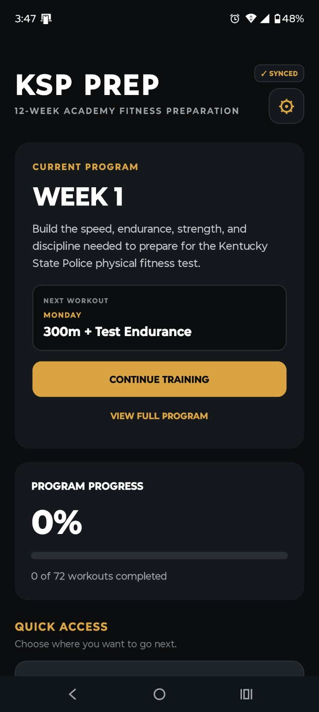
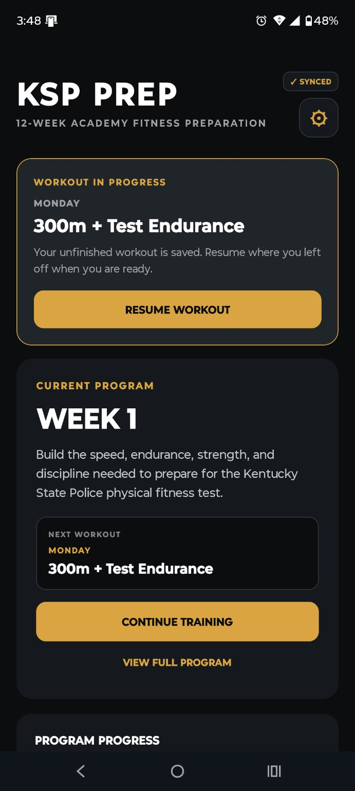
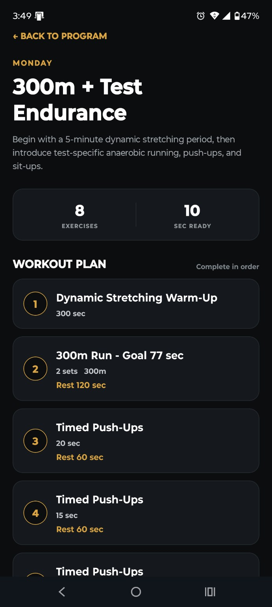
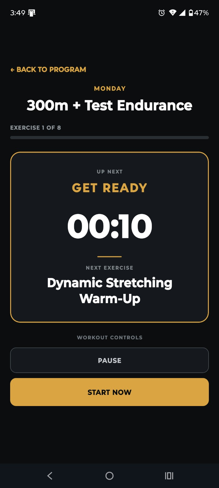
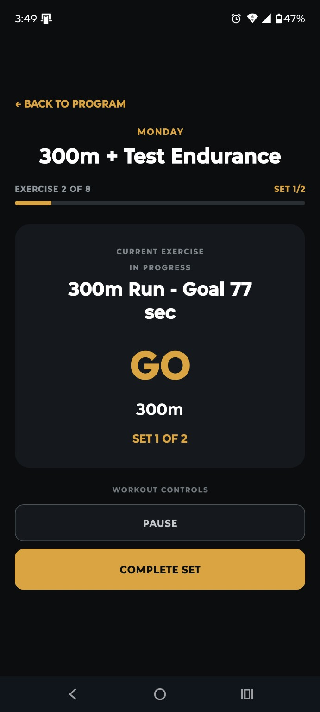
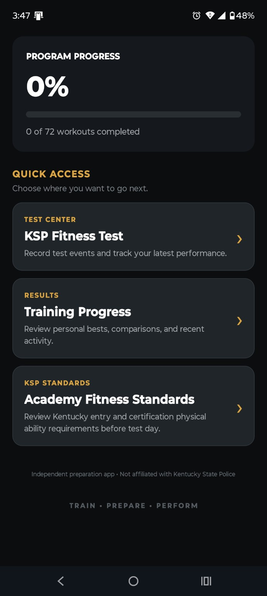

Open the current week
Your home dashboard identifies the active week and the next scheduled workout.
KSPPrep turns a long-term fitness goal into a clear weekly system. Every session gives you a defined sequence, target, timer, recovery period, and place to record progress.


KSPPrep keeps the current week, next workout, program progress, and unfinished-session state visible so the next action stays clear.
The program is organized into a 12-week sequence that combines running, muscular endurance, recovery, and test-focused preparation without requiring gym equipment for most sessions.
Your home dashboard identifies the active week and the next scheduled workout.
See the exercises, sets, distances, timers, and recovery periods before you begin.
The Workout Player guides the session through preparation, active work, and recovery.
Completed work contributes to program progress and recorded training history.
Each workout begins with a complete plan. Exercises appear in order with set counts, target distances or times, and recovery instructions where applicable.

The player keeps attention on the current task while showing exactly where you are in the workout.


A preparation countdown gives you time to position yourself before the exercise begins.
Timers, distances, set counts, and progress remain front and center during active work.
Rest periods are part of the workout flow rather than something you have to track separately.

If a session is interrupted, KSPPrep preserves the active workout so you can return and resume instead of recreating where you left off.
Signed-in progress is also synchronized across supported devices, with local persistence available during temporary connectivity loss.
KSPPrep combines speed, aerobic endurance, muscular endurance, core work, and test-specific preparation across the program.
Short-distance work and longer conditioning runs are used throughout the program.
Timed and repeated push-up work builds capacity for test-focused performance.
Core endurance is developed with timed sit-up work and supplemental plank training.
The Test Center lets you record attempts and compare your latest performance over time.
Minimum standards are a reference point, not the finish line. KSPPrep is designed as preparation guidance so users can build a margin above the required level.
KSPPrep is independently owned and is not affiliated with, endorsed by, sponsored by, or operated by the Kentucky State Police or the Commonwealth of Kentucky. Official standards, recruiting procedures, and academy requirements can change; current information from the responsible Kentucky authority controls.
KSPPrep v1.0 is coming to Android.